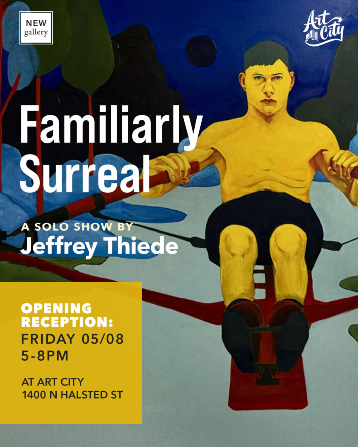

Jeffrey Thiede: Familiarly Surreal
Join Art City for the opening reception of Jeffrey Thiede’s Familiarly Surreal solo show.
Through bold colors and graphic compositions, Chicago-based artist Jeffrey Thiede explores life’s continuous cycle of change. For Familiarly Surreal, the artist’s dream-like interpretations of everyday scenery uncover the surreal in the mundane. Plants become unearthly and familiar objects uncanny as Thiede pushes the boundaries of what is expected, assumed, and familiar.
The opening reception will be held 5-9pm on Friday, May 8 at Art City. Exhibition on view through June 6, 2026.